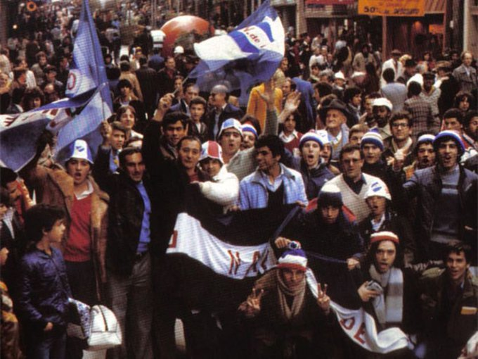

La hinchada del club tricolor tiene varios hitos historicos que la caracterisan, como ser la primera hinchada del mundo en existir. Pero la rica historia de Nacional no se limita a solo eso, sino que tambien tiene el segundo exodo del pueblo oriental.
Segundo Exodo Del Pueblo Oriental:
Se jugaba la Final de la Copa Libertadores de América de 1980, Nacional ya había superado a Oriente Petrolero, Defensor Sp., The Strongest, Olimpia y O'Higgins, y se había hecho con un lugar para pelear por el título más importante del Continente a nivel de clubes. El Decano debía enfrentar al Internacional de Porto Alegre, y el sorteo -realizado el 19 de julio- terminó marcando que el partido de ida se jugaría el 30 de ese mes en el Estadio Beira Rio. Había que arrancar la llave jugando de visita, algo positivo, ya que eso significaba que el partido definitorio se jugaría en el Estadio Centenario. Pero la hinchada más fiel del mundo dejaría una huella imborrable en la historia del fútbol latinoamericano y mundial. A 48 horas del encuentro comenzó a producirse una salida masiva de hinchas Tricolores rumbo a Brasil, más precisamente a Rio Grande do Sul, donde se disputaría la primera final. Autos y los ómnibus llenos de Bolsos inundaban las rutas y cruzaban la frontera ilusionados para acompañar al equipo en el Beira Río. Por tierra o por aire, cerca de 25.000 hinchas tomaron las calles de Porto Alegre y las tiñeron de tres colores en lo que se denominó como "El segundo éxodo del Pueblo Oriental", también llamado "La toma de Porto Alegre", un hecho histórico que generó asombro en todo el Continente, que hasta la fecha NADIE pudo igualar, en una muestra más de que la hinchada de Nacional es la más fiel y seguidora.
